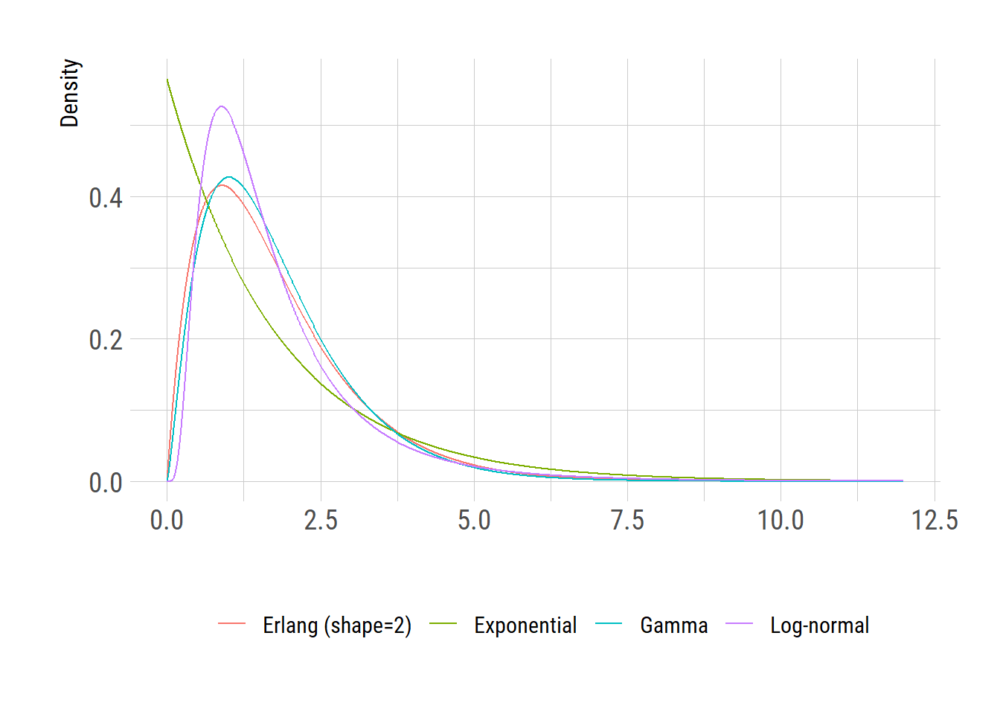

a = 1.40 # median
b = 1.98 # disperson
round(qlnorm(c(0.05,0.95), meanlog = log(a), sdlog = log(b)), digits=1)[1] 0.5 4.3Jong-Hoon Kim
February 22, 2024
In the realm of infectious disease modeling, accurately simulating the incubation period–the time between exposure to a pathogen and the onset of symptoms–is crucial for understanding and predicting the spread of diseases. Classic ordinary differential equation (ODE) models often employ the exponential distribution to represent this incubation period mostly for the sake of convenience. However, the exponential distribution is not an optimal distribution to model the waiting time for the incubation period, which is often modeled as a log-normal distribution as shown in the study by Lessler et al.. In this post, I show that waiting time may be modeled more realistically by adding an extra compartment (e.g., \(SE_1E_2IR\) rather than \(SEIR\)) and thus making the waiting time Erlang-distributed.
In particular, in the following R codes, I explored the incubation period of cholera from the study by Azman et al.. Azman writes: We estimate the median incubation period of toxigenic cholera to be 1.4 days (95% Credible Interval (CI), 1.3-1.6) with a dispersion of 1.98 (95% CI 1.87-2.11). Five percent of cholera cases will develop symptoms by 0.5 days (95% CI 0.4-0.5), and 95% by 4.4 days (95% CI 3.9-5.0) after infection.
Based on the description, I set the parameters for the log-normal distribution as follows.
a = 1.40 # median
b = 1.98 # disperson
round(qlnorm(c(0.05,0.95), meanlog = log(a), sdlog = log(b)), digits=1)[1] 0.5 4.3There is a slight mismatch for the 95th percentile (4.3 vs 4.4 [reported]). This is, however, possible considering that the estimates are from Bayesian posterior samples and I can’t account for the correlation between the parameter estimates.
Using this log-normal distribution, I generate samples (\(n=1000\)), to which exponential and Erlang distributions are fit.
dat = rlnorm(1e3, meanlog = log(a), sdlog = log(b))
fit_exp = fitdistrplus::fitdist(dat, distr="exp")
fit_gam = fitdistrplus::fitdist(dat, distr="gamma")
round(qexp(c(0.05, 0.95), rate=fit_exp$estimate[[1]]), digits=1)[1] 0.1 5.3[1] 0.4 4.0By examining \(5^{th}\) and \(95^{th}\) percentiles, we realize that the best-fit exponential distribution is too wide compared with the log-normal distribution whereas the Gamma distribution looks better.
However, in the context of ODE models, Gamma distribution is not easy to implement except for a subset in which the shape parameter is an integer (i.e., Erlang distribution). Therefore, I fit the rate parameter of the Gamma distribution while the shape parameter is set to an integer. Based on the previous fitting results (shape parameter = 2.348677), I only test the cases where the shape parameter is 2 or 3.
Considering the negative log likelihood values, we realize that the Gamma distribution with shape of 2 provides a better fit than the one with shape of 3.
We plot the results as a visual summary.
n = 1000 # the number of
x = seq(0, 12, length.out=n)
df = data.frame(
val = rep(x, 4),
dist = rep(c("Log-normal", "Exponential", "Gamma", "Erlang (shape=2)"),
each=n),
density =
c(dlnorm(x, meanlog=log(1.4), sdlog=log(1.98)),
dexp(x, rate=fit_exp$estimate[[1]]),
dgamma(x, shape=fit_gam$estimate[[1]],
rate=fit_gam$estimate[[2]]),
dgamma(x, shape=2, rate=er_shp2$minimum)))
library(ggplot2)
extrafont::loadfonts("win", quiet=TRUE)
theme_set(hrbrthemes::theme_ipsum_rc(base_size=14, subtitle_size=16, axis_title_size=12))
ggplot(df)+
geom_line(aes(x=val, y=density, color=dist))+
labs(y="Density", x="", color="")+
theme(legend.position = "bottom")
The above figure clearly shows that the Erlang distribution has a better representation of reality (in this case, the log-normal distributed incubation period) than the commonly used exponential distribution.